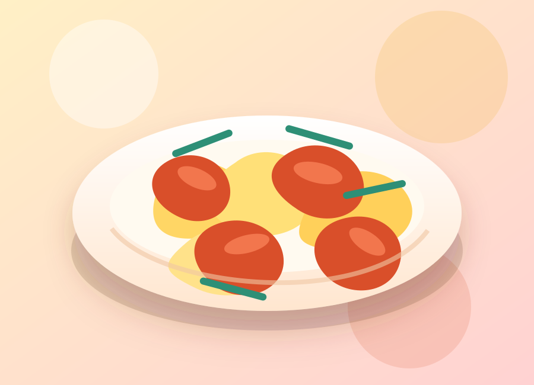
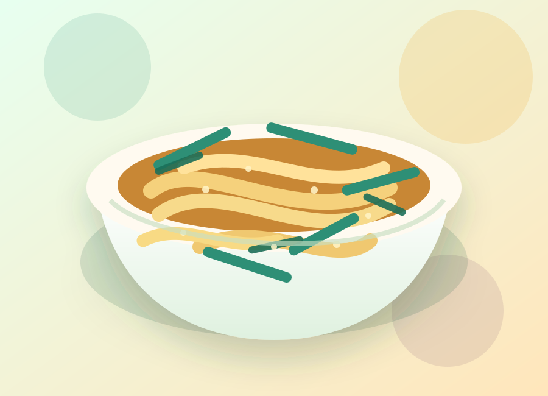

The Odin Project
Three dishes. One sharp HTML project.
A polished recipe collection built for the Foundations Recipes assignment: clean links, clear structure, useful ingredients, ordered steps, and a visual layer that makes the project feel like a real mini food site.

Featured recipes
Each recipe page includes a description, ingredients, and step-by-step instructions, while keeping navigation simple enough for the Odin assignment.
Mapo Tofu
A bold Sichuan-style dish with soft tofu, chili bean paste, aromatics, and a glossy spicy sauce.

Tomato Egg
A fast home-style stir-fry with tender scrambled eggs and juicy tomatoes in a light sweet-savory sauce.

Scallion Oil Noodles
Springy noodles tossed with fragrant scallion oil, soy sauce, and a deep caramelized aroma.